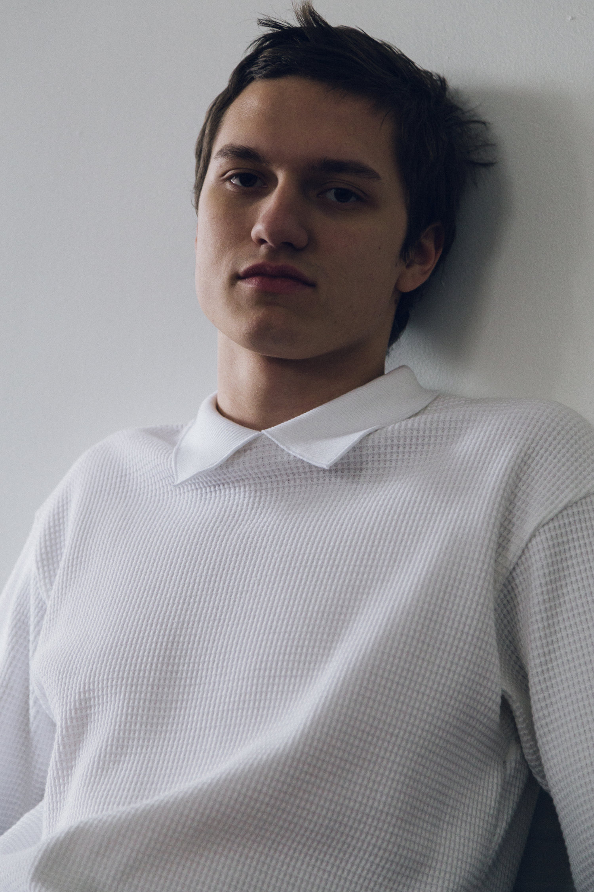

Austyn Benyak is a creative interested in type, rock and roll and Levi's jeans.
Playfulness and formality play the biggest roles in his work. He creates with the information of form and necessity. But he can't take that too seriously. He's loose and direct.
Type is his main interest. He compares it to a pair of Levi's: formed for functionality and played with by the user. He likes that people can make up their own characteristic of the form.
At the end of it all he wants to be a rockstar/cowboy.
résumé→
austyn benyak
- austynbenyak@gmail.com
- 330.636.6764
